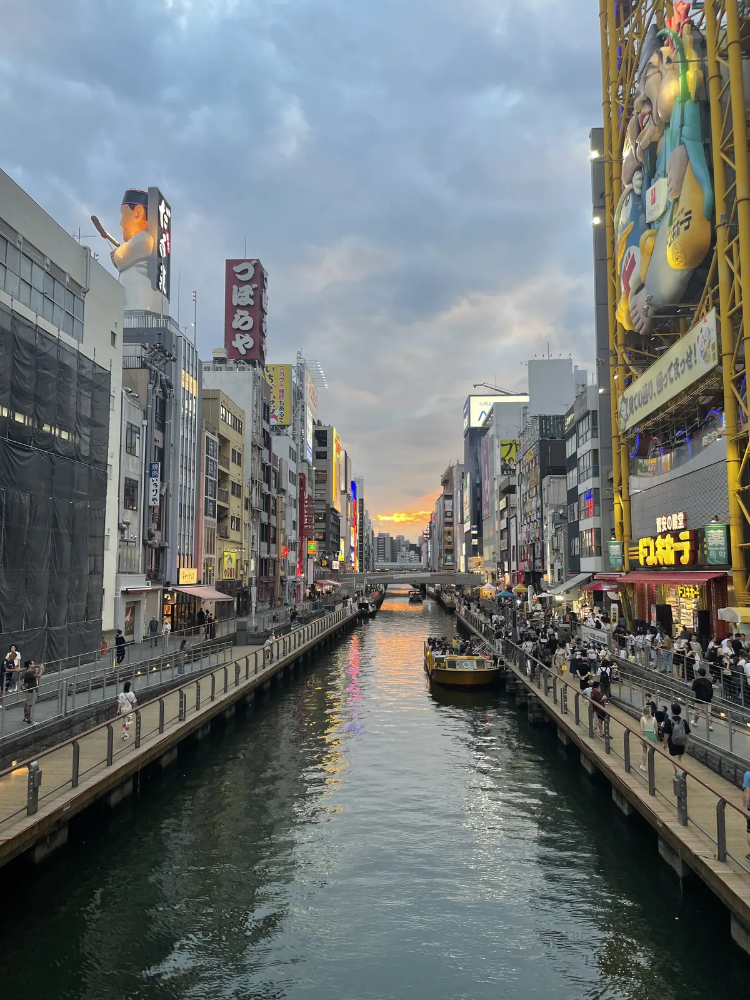
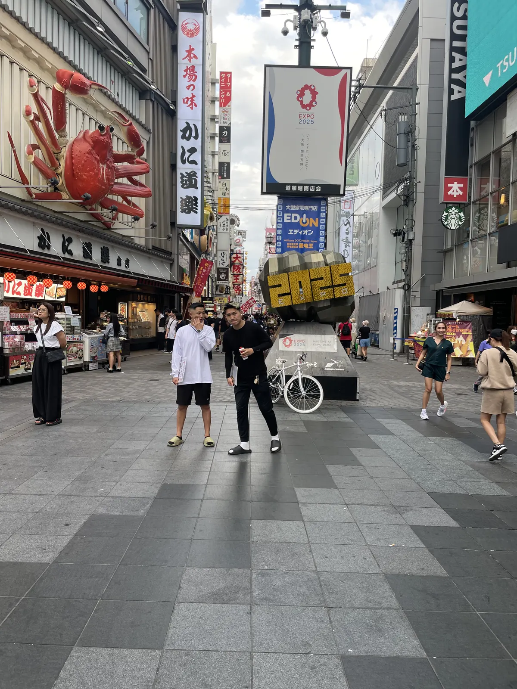
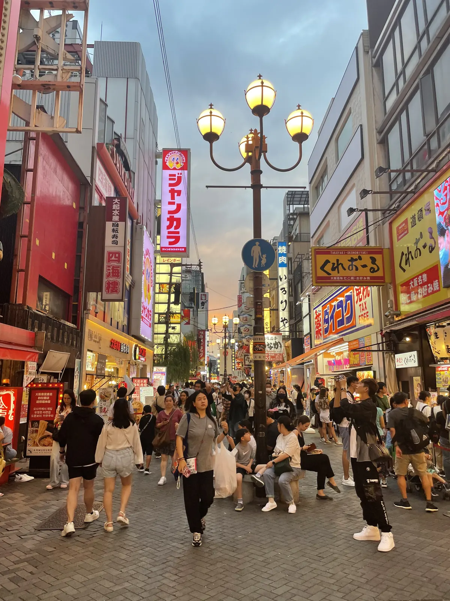
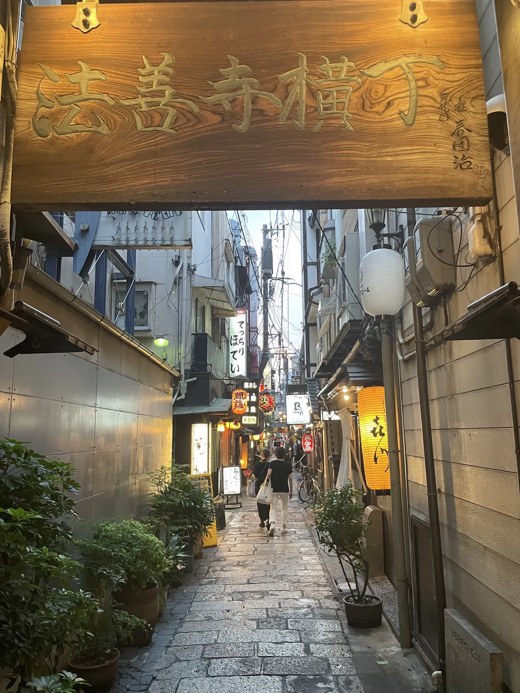
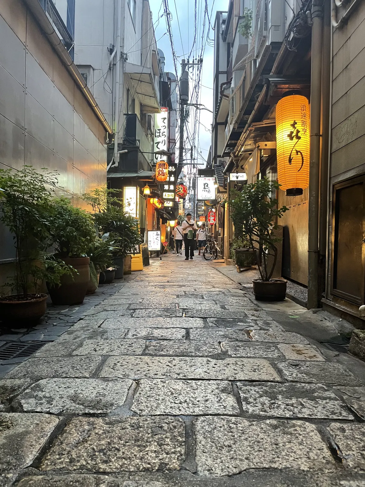
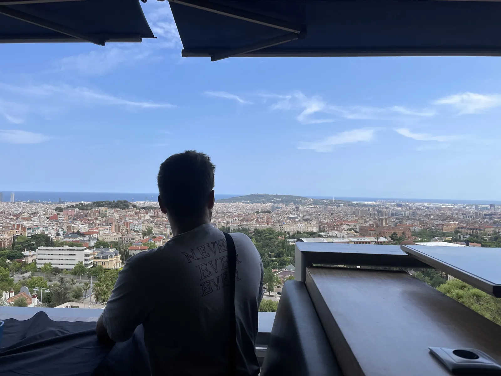
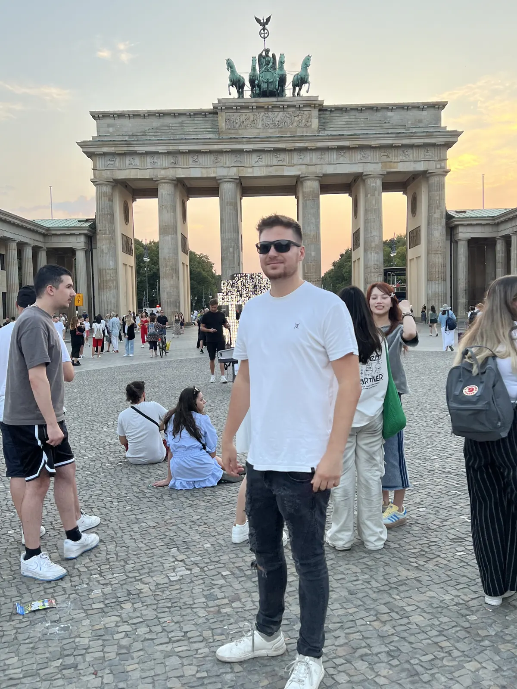

🇯🇵 Osaka Guide: 10 Orte – Dotonbori, Burg, Shinsekai & Hidden Gems

Inhaltsverzeichnis
Osaka ist Japans Streetfood-Hauptstadt. Preise und Zeiten sind Richtwerte (Stand 2026).
🗺️ Karte: 10 Orte auf einen Blick
Meine Story in Osaka
Osaka war Teil meiner Japan-Reise. Mein Tipp: abends nach Dotonbori, durch die Garküchen treiben lassen und Takoyaki direkt vom Stand essen – tagsüber die Burg und der Kuromon-Markt.
Dieser Guide enthält Werbe-Links (GetYourGuide, Omio). Wenn du darüber buchst, bekomme ich eine kleine Provision – du zahlst keinen Cent mehr. Preise und Öffnungszeiten ändern sich – vor dem Besuch kurz prüfen.
🆓 Kostenlos erleben
4 Orte in Osaka, die du ohne Eintritt oder komplett gratis erleben kannst (bei manchen kostet nur ein Teil, z. B. Turm oder Museum):
Auf einen Blick
So kommst du hin und herum
Osaka erreichst du per Shinkansen oder Flug; von Kyoto sind es nur 15–30 Minuten mit dem Zug. Aktuelle Fahrpläne vorher prüfen.
Vom Flughafen Kansai (KIX) fährst du mit dem Zug in rund 40 bis 50 Minuten in die Innenstadt (Namba). Innerhalb der Stadt nutzt du die Metro und die JR-Loop-Line; eine IC-Karte (zum Beispiel ICOCA) macht das Bezahlen leicht. Osaka liegt sehr zentral: Kyoto und Nara erreichst du mit dem Zug in 15 bis 50 Minuten (Fahrpläne vorher prüfen).
Prüfe, ob ein Osaka-Pass für deine Pläne lohnt – er enthält oft freien Eintritt für mehrere Attraktionen und Fahrten. In Osaka ist Bargeld weiterhin wichtig; kleinere Stände nehmen oft nur Yen.
1. Must-Sees
Dotonbori
Abends durch die Garküchen treiben lassen und Takoyaki direkt vom Stand essen.
Dotonbori ist das Herz von Osakas Ausgehviertel: ein Kanal, gesäumt von Neonreklamen, Restaurants und Garküchen. Das berühmteste Motiv ist das Glico-Läufer-Schild über dem Wasser; ein riesiger Krabbenschmuck am Haus des Restaurants Kani Doraku ist das zweite. Bei Dunkelheit leuchtet alles, und die Straße ist voll.
Probiere hier Takoyaki (Oktopus-Bällchen) und Okonomiyaki (herzhafter Pfannkuchen) direkt am Stand. Das Motto der Stadt lautet „kuidaore“ – sich zu Tode essen. Plane einen Abend ein und lass dich treiben; komm gegen 18 Uhr, wenn die Lichter angehen.
Tipp: Komm bei Dämmerung und nimm kleine Portionen an mehreren Ständen statt eines großen Essens.


Kuromon-Markt🆓 Kostenlos erlebbar
Tagsüber über den Markt: Meeresfrüchte und Streetfood.
Der Kuromon-Markt wird auch „Osakas Küche“ genannt: eine überdachte Markthalle mit rund 150 Ständen für Fisch, Meeresfrüchte, Gemüse und fertige Gerichte. Du kannst frisch gegrillte Jakobsmuscheln, Sushi, Obst am Stiel und Tamagoyaki probieren.
Heute ist der Markt auch bei Touristen sehr beliebt, deshalb wird es mittags voll – ein Besuch am frühen Vormittag ist besser. Viele Stände haben begrenzte Öffnungszeiten; manche schließen am Nachmittag.
Tipp: Komm vor 10 Uhr und nimm Bargeld für kleine Probierportionen mit.
Burg Osaka
Tagsüber die Burg.
Die Burg Osaka wurde im 16. Jahrhundert von Toyotomi Hideyoshi errichtet und im 20. Jahrhundert rekonstruiert. Der Hauptturm beherbergt ein Museum über die Geschichte der Burg und der Samurai-Zeit; von der obersten Etage hast du einen Rundumblick über die Stadt. Die Anlage ist von Wassergräben, Mauern und einem weiten Park umgeben.
Die Gärten (zum Beispiel der Nishinomaru-Garten) sind besonders in der Kirschblüte im Frühling beliebt. Plane zwei bis drei Stunden ein; Eintritt und Öffnungszeiten ändern sich (vorher prüfen). Du erreichst sie bequem mit der Bahn.
Tipp: Komm morgens, wenn es noch kühl und leer ist, und plane Zeit für den Park ein.
Shinsekai & Tsutenkaku-Turm
Shinsekai ist ein Retro-Viertel mit Neonschildern, Spielhallen und Imbissen, das an eine frühere Zeit erinnert. Im Zentrum steht der Tsutenkaku-Turm, ein Wahrzeichen von Osaka mit einer Aussichtsplattform. Das Viertel ist bekannt für Kushikatsu – frittierte Spieße, die du in eine gemeinsame Soße tauchst. Die Regel dort: Nicht doppelt tauchen!
Das Viertel ist sehr lebendig und authentisch; abends wirkt es besonders stimmungsvoll. Plane einen Abend ein; behalte Taschen im Blick.
Tipp: Iss Kushikatsu und halte dich an die „Nicht doppelt tauchen“-Regel.
Umeda Sky Building & Floating Garden
Das Umeda Sky Building besteht aus zwei Türmen, die oben durch eine Plattform verbunden sind. Die Aussichtsplattform Floating Garden Observatory liegt rund 170 Meter hoch und bietet einen 360-Grad-Blick über Osaka. Besonders schön ist die Aussicht zum Sonnenuntergang und am Abend.
Eine Rolltreppe, die frei durch die Luft führt, ist ein Erlebnis für sich. Eintritt ändert sich (vorher prüfen). Plane eine Stunde ein.
Tipp: Komm kurz vor Sonnenuntergang und bleib, bis die Lichter angehen.
Shinsaibashi & Amerikamura
Shinsaibashi ist Osakas große Einkaufsstraße: eine überdachte Arkade mit Läden, Drogerien und Cafés, direkt neben Dotonbori. Nebenan liegt Amerikamura, ein Viertel für Mode, Streetwear und Jugendkultur mit bunten Läden und Straßenkunst.
Wenn du bummeln willst, plane den Nachmittag dafür ein. Die Läden öffnen meist gegen 10 bis 11 Uhr und schließen abends. Es gibt viele Möglichkeiten, Souvenirs zu kaufen.
Tipp: Komm am Nachmittag und verbinde den Bummel mit Dotonbori am Abend.
2. Hidden Gems in Osaka
Hōzenji Yokochō – die Gasse hinter Dotonbori💎 Hidden Gem🆓 Kostenlos erlebbar
Nur ein paar Schritte vom Trubel entfernt liegt die schmale Steingasse Hōzenji Yokochō mit kleinen Restaurants und Bars, beleuchtet von Laternen. Im Zentrum steht der Hōzenji-Tempel mit einer moosbewachsenen Fudō-Myōō-Statue, die Besucher mit Wasser übergießen und der sie Wünsche zuflüstern.
Die Gasse ist ein stiller Kontrast zu Dotonbori. Sei respektvoll: Es ist ein aktiver Ort des Glaubens und kein Fotospot für laute Gruppen.
Tipp: Komm nach dem Abendessen und genieße die Ruhe nach dem Trubel.


Nakazakichō – Retro-Cafés in alten Häusern💎 Hidden Gem
Nakazakichō ist ein kleines Viertel mit Holzhäusern, die den Krieg überstanden haben und heute Cafés, Läden und Ateliers beherbergen. Es ist ruhig, ein bisschen verwinkelt und ein schöner Gegensatz zu den Hochhäusern ringsum.
Die Läden öffnen meist spät und manche sind nur an bestimmten Tagen auf. Plane einen entspannten Nachmittag ein und trinke Kaffee in einem alten Haus.
Tipp: Komm am Nachmittag und prüfe die Öffnungszeiten der kleinen Läden.
Namba-Yasaka-Schrein – der Löwenkopf💎 Hidden Gem🆓 Kostenlos erlebbar
Der Namba-Yasaka-Schrein hat eine Bühne in Form eines riesigen Löwenkopfes mit weit aufgerissenem Maul, rund 12 Meter hoch. Der Löwe soll Unglück verschlingen und Glück bringen. Der Schrein liegt mitten in der Stadt, wirkt aber überraschend ruhig.
Du kannst hier ein kurzes Gebet sprechen oder einfach das Bild genießen. Kein Eintritt; plane zehn bis zwanzig Minuten ein. Respektiere die Regeln für Schreine.
Tipp: Geh früh am Morgen oder am späten Nachmittag, wenn es ruhig ist.
3. Tagesausflug von Osaka
Nara – Tempel & zahme Hirsche🆓 Kostenlos erlebbar
Nara erreichst du mit dem Zug in rund 40 bis 50 Minuten von Osaka. Die frühere Hauptstadt ist bekannt für den Tōdai-ji mit einer der größten Bronzebuddha-Statuen der Welt und für die vielen frei lebenden Sikahirsche im Park. Du kannst Hirschkekse kaufen und die Tiere füttern – sie verbeugen sich sogar manchmal.
Der Park ist weitläufig; plane einen halben bis ganzen Tag ein. Pass auf: Die Hirsche können aufdringlich werden und nach Essen schnappen. Halte Karten und Taschen fest.
Tipp: Fahr früh, bevor die Gruppen kommen, und halte Essen aus der Tasche.
Was Japan ausmacht
Siehe meine Guides zu Kyoto und Tokio.
📍 Diesen Guide in Google Maps speichern
1. Schnell: Route öffnen
2. Dauerhaft: als eigene Karte (2 Minuten)
- Lade die Datei mit allen Pins herunter (KML-Button unten).
- Öffne Google My Maps → „Neue Karte erstellen“ → „Importieren“ → Datei auswählen.
- Fertig – alle Orte stehen exakt an der richtigen Stelle, mit Nummer, Tipp und Link zum Guide.
- In der Google-Maps-App findest du die Karte unter „Gespeichert“ → „Karten“, auch unterwegs.
⬇️ Alle Pins für Google Maps (KML) ⬇️ Ortsliste herunterladen (CSV)
3. Einzeln speichern
Dein Plan
Tag 1: Tag 1 – Klassiker
- Vormittag – Burg Osaka und Park
- Mittag – Kuromon-Markt (früh)
- Nachmittag – Shinsaibashi und Amerikamura
- Abend – Dotonbori, Takoyaki, Hōzenji Yokochō
Tag 2: Tag 2 – Retro & Aussicht
- Vormittag – Nakazakichō und Café
- Mittag – Shinsekai und Kushikatsu
- Nachmittag – Tsutenkaku-Turm, Namba-Yasaka-Schrein
- Abend – Umeda Sky Building bei Sonnenuntergang
Tag 3: Tag 3 – Nara
- Ganztags – Zug nach Nara, Tōdai-ji, Park mit den Hirschen, abends zurück
Häufige Fragen
Reicht ein Tag in Osaka?
Für Essen und Highlights ja.
Reicht ein Tag in Osaka?
Brauche ich Bargeld in Osaka?
🗺️ Alle Orte auf meiner Karte → Mehr Guides und Reels auf Instagram: @hiddengem.atlas
Guide teilen: Per WhatsApp
Weitere Guides
- 🇳🇱🇳🇱 Amsterdam
 🇧🇪 Antwerpen
🇧🇪 Antwerpen- 🇳🇱🇳🇱 Arnheim
- 🇦🇹🇦🇹 Bad Gastein & Lungau

🇪🇸 Barcelona
🇩🇪 Berlin